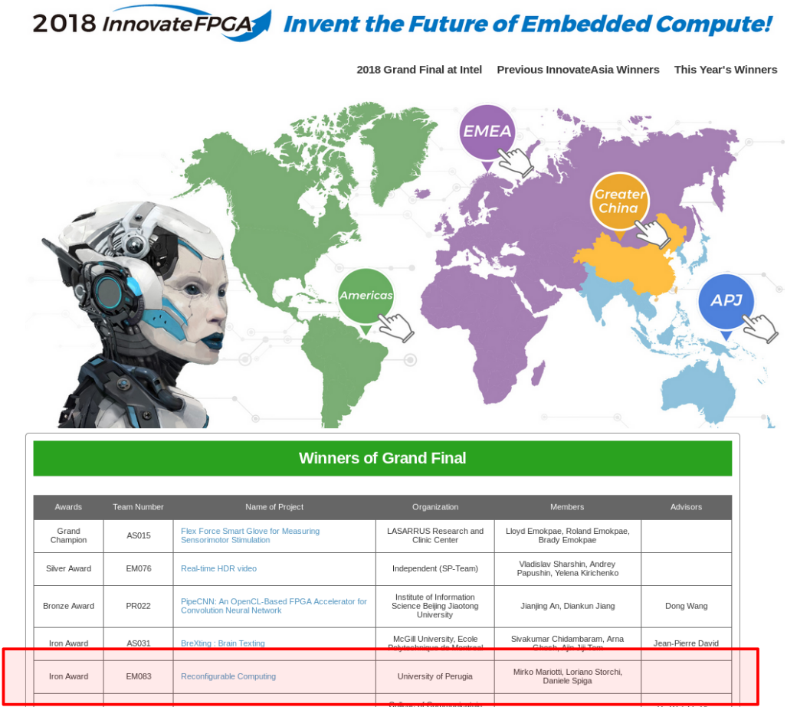
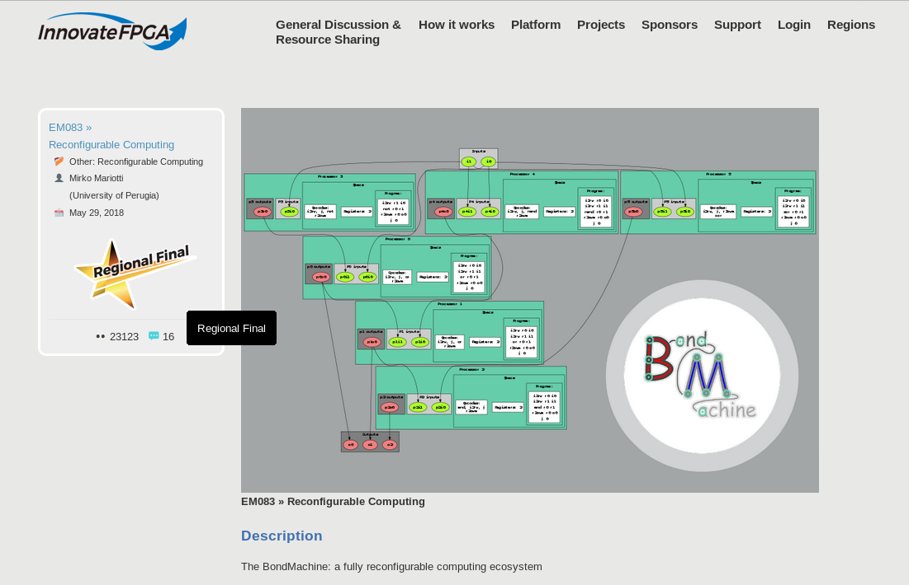
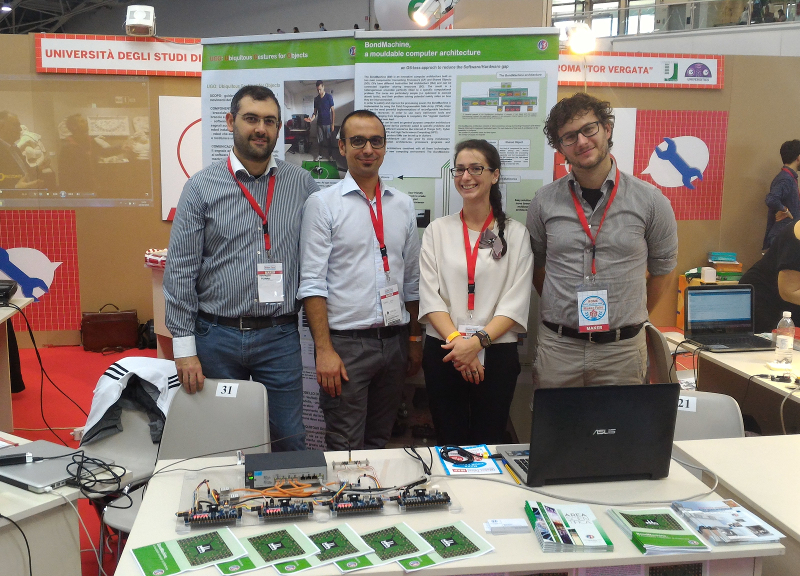

27/11/2023 Lecture at the ICSC Course: “Introductory course to HLS FPGA programming”
Lecture at the Introductory course to HLS FPGA programming, a course thought for the new personnel hired by means of the ICSC project to work on projects and research activities in the framework of Spoke 2 (“Fundamental Research And Space Economy”). It has been an occasion to build new documentation and hands-on material for the BondMachine project now available in the BM repository. Slides on the presentations section of the site.
23/05/2023 Talk at Workshop of the CCR of INFN
Talk about our latest work on creating computing accelerators at Workshop of the CCR of INFN. Slides on the presentations section of the site.
01/12/2022 BondMachine Project Thrives with Four Talks in Late 2022
The year 2022 drew to a close with an exhilarating period for the BondMachine project, as it witnessed the presentation of four captivating talks across various locations. These engaging sessions showcased the progress made by the project. Let’s delve into the highlights of these talks that marked the end of 2022 as a truly exceptional period for BondMachine.
- “Machine Learning inference with the BondMachine project” - Machine Learning Techniques with FPGA Devices for Particle Physics Experiments
- “The BondMachine project” - Joint ICTP-IAEA School on FPGA-based SoC and its Applications to Nuclear and Scientific Instrumentation
- “Machine Learning on FPGA” - Third edition of the Machine Learning at INFN advanced level hackathon
- “Machine Learning on FPGA: The BondMachine Project” - SOSC 2022 Fourth International School on Open Science Cloud, November 28, 2022 to December 2, 2022 INFN Perugia
Slides on the presentations section of the site.
23/05/2022 Talk at Workshop of the CCR of INFN
Talk about our latest work on creating computing accelerators at Workshop of the CCR of INFN. Slides on the presentations section of the site.
10/01/2022 Getting started and tutorials
The Getting started section is online with the installation instructions, and the first one of an hopefully long list of tutorials.
10/12/2021 Article published on Parallel Computing
Our article on the BondMachine has been published on Parallel Computing (Elsevier) a peer-reviewed journal.
10/06/2020 New firmware for keyboard and VGA
The BondMachine has now interfaces for keyboard and VGA monitors.
10/09/2019 Talk at ParCo2019
Talk at The International Conference on Parallel Computing ParCo2019. Slides on the presentations section of the site.
03/07/2019 Lecture at 2019 NiPS Summer school
2 hours lecture “Enabling Machine Learning on FPGA” in the program of the NiPS Summer School 2019 – Architectures and Algorithms for Energy-Efficient IoT and HPC Applications. The lecture was about the use a system like the BondMachine to run ML payloads on FPGA. Slides on the presentations section of the site.
16/05/2019 Lecture at ICTP
Lecture “The BondMachine: a moldable computer architecture” in the program of the Advanced Workshop on Modern FPGA Based Technology for Scientific Computing - The lecture was about the BondMachine project and contains a full hands-on session made on Zedboards. Slides on the presentations section of the site.
09/05/2019 Video of the InnovateFPGA 2018 Global
Terasic and Intel published on youtube the video recap of the last year grand final. We where there with the BondMachine, check it it on the media section of the site.
05/04/2019 Talk ISGC2019
Talk at The International Symposium on Grids and Clouds (ISGC) 2019. The talk was fucused on the BondMachine project and its possible machine learning applications. Slides on the presentations section of the site.
22/01/2019 Video of the Golab2018 talk
Online the video of the talk at Golab 2018 check it it on the media section of the site.
27/11/2018 Online our interview at TEF
Same day ago we where guests on an episode of “Speciale Università” a talk show of TEF a local TV (in italian).
The video is avalaible on the media section.
22/10/2018 Talk at Golab 2018
given at Golab 2018.
Slides on the docs section.
20/08/2018 InnovateFPGA Grand final Iron Award
The project won the Iron Award at the InnovateFPGA 2018 grand final at Intel Campus in San Jose (CA) USA on 15th of August 2018. It has been a pleasure and an honor to be there. I collected some photos of our adventure in San Francisco.

20/07/2018 NIPS Summer School 2018
Poster of the BondMachine project presented at the NiPS Summer School 2018.
02/07/2018 InnovateFPGA Grand final
The project reached the InnovateFPGA Grand final by winning the silver award in the EMEA final. We will present the project in San Jose in August.
31/05/2018 InnovateFPGA Regional final
The project reached the InnovateFPGA EMEA Regional final, we are very happy for this achivement.

27/05/2018 Video for the InnovateFPGA contest
Published the video for the InnovateFPGA 2018 contest
23/02/2018 Talk on the BondMachine
given at INFN-CNAF.
Slides on the docs section.
03/02/2018 InnovateFPGA Semi-final
The project reach the InnovateFPGA semi-final
28/12/2017 InnovateFPGA
The BondMachine project will participate in the InnovateFPGA contest, wish us good luck.
09/11/2017 The BondMachine @ Umbria Business Matching 2017
23/05/2017 Talk on the BondMachine
given at “Workshop della CCR: L.N.G.S. , 22-26 May 2017 , Gran Sasso National Laboratories, Italy”.
Slides on the docs section.
25/11/2016 The BondMachine @ Umbria Business Matching 2016
14-16/10/2016 The BondMachine @ Make Faire 2016 Rome
We presented our prototype at Maker Faire 2016 in Rome. It has been an exciting adventure and we would like to thank everyone that stopped to our stand and give us feedback about our project and ideas.

16-20/05/2016 Poster on the BondMachine
presented at “Workshop della CCR: 16-20 May 2016, La Biodola - Isola d’Elba, Italy”.
Poster on the media section.